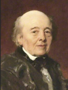
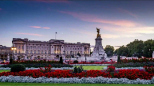
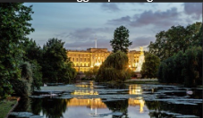
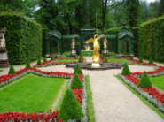
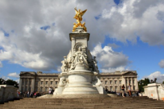

Buckingham Palace for junior classes

Buckingham Palace is the official home of the kings and queens of the United Kingdom. It is a place for important events, official meetings, and ceremonies.
John Nash is the architect who made Buckingham Palace in 1703.
Architecture features
- It is in the neoclassical style.
- The front has columns and decorations.
- There is a big balcony in the middle of the east side. The royal family uses it for special events.
- Inside, there are big rooms like the Throne Room, the White Room, and the Museum Art Room. These rooms have beautiful art, furniture, and old things from the Royal Collection.
- There is a special staircase to the State Rooms. It has big candle holders and mirrors.
- The palace has big gardens with a small lake and nice plants
Traditions

- The Changing of the Guard is a tradition. It happens every day in summer and every other day in winter. Soldiers wear red clothes and big black hats. They walk through the palace gates and show their discipline and nice uniforms.
- The queen and her family stand on the palace balcony to greet people on holidays and special days, like royal weddings. Picture background
- Buckingham Palace is open for tourists in the summer, from late July to late September. Visitors can see the State Rooms, royal apartments, paintings, old furniture, and things that tell about the royal family’s life.
Buckingham Palace for senior classes


Buckingham Palace is the official London home and office of the British kings and queens. It is near The Mall street and Green Park. There is a white marble and gold statue of Queen Victoria nearby. When the king or queen is at the palace, a special royal flag flies on the roof.
Picture backgroundNow, the palace has 775 rooms. There are 19 big rooms for important events, 52 rooms for the royal family and guests, 188 rooms for workers, 92 offices, and 72 bathrooms. The palace area is 20 hectares. The garden is 17 hectares.
The gardens at Buckingham Palace are the biggest private gardens in London. There is a big artificial pond finished in 1828.
The palace’s west side is called the west facade

Inside the palace, there is a collection of art owned by the queen. It has French Sèvres porcelain and French and English furniture. The palace has a swimming pool, a post office, and its own cinema. The king or queen leaves the palace for two months, in August and September. Then, visitors can see the palace rooms.
The architect


The architect John Nash designed and built the main palace building. He used the old Buckingham House and built three more buildings. They form a square with a big courtyard. Later, the king wanted to make the house a big palace in the French neoclassical style.
Victoria Memorial is a statue in the Royal Garden in front of Buckingham Palace. It is for Queen Victoria. The memorial opened in 1911 by Victoria’s grandson King George V and his cousin Wilhelm II. The sculptor was Sir Thomas Brock. The memorial finished in 1914 with a bronze statue.
The pedestal is made of white marble and weighs 2,300 tons. It was designed by architect Aston Webb.
The face of Queen Victoria’s statue looks northeast, towards The Mall street. On three sides of the pedestal are marble statues of the Angel of Justice, the Angel of Truth, and the Angel of Mercy. On top is a statue called Victory with two sitting figures.
The whole memorial has a sea theme. It shows mermaids that show the sea power of the United Kingdom.